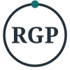

Short name: RGP. Palette: Slate & Signal Teal. Idea: everyone has an equal seat at the table.

Monogram: avatars, social profiles, faviconRules: keep clear space equal to the height of the ring's teal dot on all sides; do not recolor, stretch or add effects; use the reversed version on slate or teal. The logo text uses Georgia as a stand-in for Fraunces. Before print or signage, have final artwork converted to outlines with the licensed font.
#24313APrimary: headings, nav, dark sections#141D23Footer, deepest background#176F73Accent: buttons, links, key actions#5CC4C8Accent on dark backgrounds#E3A52BHighlights and focus ring only; use dark text on it#F2F5F6Page background#5B6B75Secondary body text#DCE3E6Borders and dividers#FFFFFFCards, text on dark| Pair | Ratio | Result (4.5:1 for body text) |
|---|---|---|
| Slate on Cloud | 12.2:1 | Pass |
| Steel on Cloud | 5.0:1 | Pass |
| Teal on Cloud | 5.4:1 | Pass |
| White on Teal | 5.9:1 | Pass |
| White on Slate | 13.3:1 | Pass |
| Teal Light on Slate | 6.5:1 | Pass |
| Slate on Amber | 6.1:1 | Pass |
Headlines: Fraunces 600/700 (fallback Georgia). Body: Inter 400 to 700 (fallback system sans).
The seats-around-the-table mark and the open-ring mark are saved in the logos folder as alt-*.svg. Full concept sheets: logo-concepts.html and colors/palette-options-all-four.html.